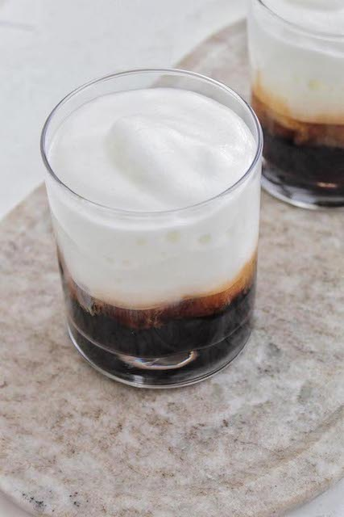

The BEST Freddo Cappucino Recipe!

Description
The Creamy side of Side of Iced Espresso!
The creamier sibling to the Freddo Espresso, a Freddo Cappucino is also made to be sipped slowly. The combination of a strong iced espresso with a creamy frothed milk atop make the perfect pairing for a hot day, whether in Naxos or at home!
Freddo Cappucino Ingredients
- 5 Ice Cubes
- 1 Cup of Ice Cold Milk
- 1 Cup Cold Water
- A Double Shot of Espresso
- A Glass Mug and Straw
- A Powered Mixer
Steps
- Begin by pouring 1 cup of cold water into your glass with 5 ice cubes inside
- Pour your doubleshot of Espresso into the glass, this helps cool the espresso and prevents it from melting all the ice
- Pour your cold milk into the powered mixer and turn on, mix until cold milk has turned into a rich looking frothe
- Once frothed, turn off your mixer and pour the frothed milk atop iced espresso in the glass, add straw
- Sip slowly, while gossiping with friends about your extended family!